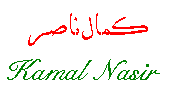

Kamal Nassir was born in Birzeit in 1925. He studied
at BirZeit School (now Birzeit University) then continued his education at the American
Univeristy in Beirut.
At the age of thirteen, he won the first award in a poetry contest at Birzeit School.
He worked as a journalist then he was elected to represent Ramallah in the Jordanian Parliament
in 1956. He was deported after Israel occupied the West Bank in 1967. He became a member of
the PLO Executive Committee in 1969 and became the director of the information department in the
committee. He was also editor in chief of falasteen al-thawrah magazine.
He was assassinated by the Israelis in Beirut on April 10, 1973.
 Poem
Poem
[Arabic]
[English]
 Go back to Poets from Palestine
Go back to Poets from Palestine